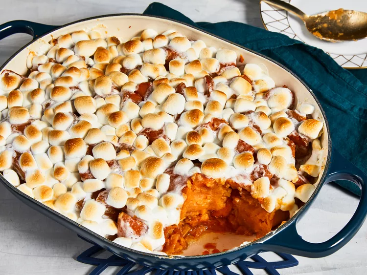

Candied Yams
Toasted candied yams.
The one trick to make sweet yams even sweeter is using marshmallows.
All we need is the help of our trusty oven.
Ingredients:
- Sweet Potatoes
- Butter
- Brown Sugar
- Marshmallows
The one trick to make sweet yams even sweeter is using marshmallows.
All we need is the help of our trusty oven.